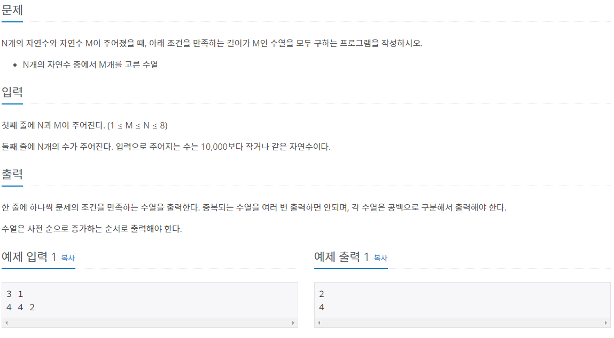
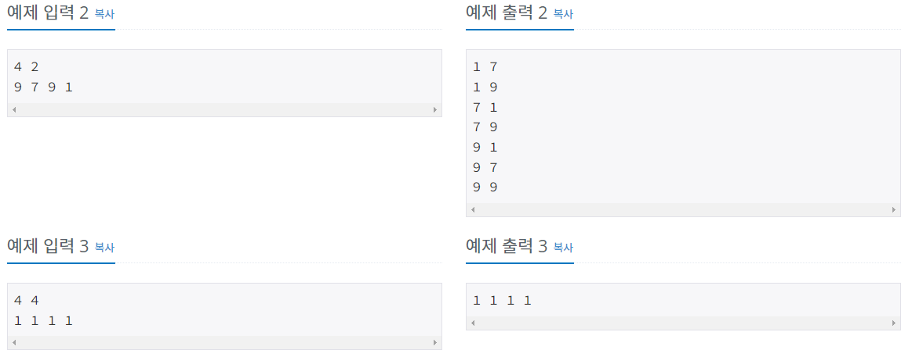
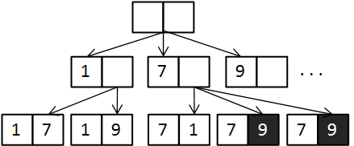
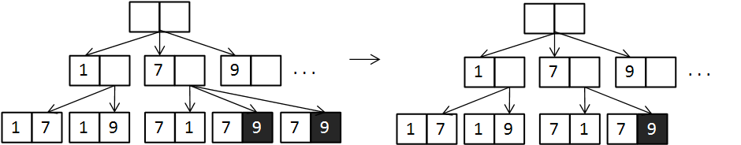

#INFO
난이도 : SILVER2
문제유형 : 백트래킹
출처 : 15663번: N과 M (9) (acmicpc.net)
15663번: N과 M (9)
한 줄에 하나씩 문제의 조건을 만족하는 수열을 출력한다. 중복되는 수열을 여러 번 출력하면 안되며, 각 수열은 공백으로 구분해서 출력해야 한다. 수열은 사전 순으로 증가하는 순서로 출력해
www.acmicpc.net
 
#SOLVE
백트래킹 방식으로 문제를 풀이했다. 수열을 입력받은 후 sort 함수를 이용해 오름차순으로 정렬한 뒤, 중복이 발생하지 않도록 출력을 해야한다. 2번째 케이스 n = 4 , m = 2 , [9, 7, 9, 1] 를 예로 들어보면 중복 처리를 하지 않는다면 [7, 9]가 2번 출력되고 만다.

따라서 소스 코드에 "이전 수열의 마지막 항과 새로운 수열이 마지막 항이 같은 경우" 중복 처리를 하는 코드를 추가해 주면 중복된 코드 없이 수열이 오름차 순으로 출력되게 된다.

#CODE
#include <bits/stdc++.h>
using namespace std;
int n, m;
int arr[10];
int num[10];
bool isVisited[10];
void recur(int k){
if(k == m){
for(int i = 0; i < m; i++)
cout << num[arr[i]] << " ";
cout << '\n';
return;
}
int tmp = 0;
for(int i = 0; i < n; i++){
if(!isVisited[i] && tmp != num[i]){
arr[k] = i;
tmp = num[i];
isVisited[i] = true;
recur(k+1);
isVisited[i] = false;
}
}
}
int main(void) {
ios::sync_with_stdio(0);
cin.tie(0);
cin >> n >> m;
for(int i = 0; i < n; i++)
cin >> num[i];
sort(num, num + n);
recur(0);
return 0;
}